Matthew Coetzee
Cultural Sociology | Organizational Sociology | Social Theory | Social Movements & Collective Behavior | Global & Comparative Sociology
I am a cultural and organizational sociologist and PhD candidate in Sociology at the University of Notre Dame, with a graduate minor in Screen Cultures. My research asks a central question:
Why do people and communities confronting the same crisis come to see danger, obligation, and one another so differently?
I study how culture, organizations, collective memory, and communication shape what people perceive, how they judge situations, and what forms of collective action become possible.
My book project, Seeing Crisis: Perceptual Apertures and the Making of Violence, Restraint, and Repair, examines why the collapse of public security during South Africa’s July 2021 unrest produced racialized vigilantism in some parts of metropolitan Durban but restraint and interracial cooperation in others. Drawing on 120 interviews, WhatsApp archives, more than 800 participant-generated images and videos, and spatial data on over 400 incidents, I develop the concept of perceptual apertures to explain how local organizations shape what people notice, whom they regard as threatening or trustworthy, and whose welfare enters into decisions about how to act. The project shows that resilience depends not only on the relationships and resources communities possess before crisis, but also on how organizations reorganize perception, communication, and moral obligation as events unfold.
This research has developed into a broader agenda on culture, organizations, and action under conditions of uncertainty. My work on collective memory examines how remembered histories become practical guides during unfolding events—helping actors decide what is happening, who matters, and what must be done. My organizational research examines how emergent groups translate moral interpretations into concrete practices of protection, restraint, exclusion, and repair. Across this work, I am particularly interested in moments when established institutions weaken and actors must improvise new ways of interpreting situations and coordinating action.
A second strand of my research develops social theory from Southern African concepts and cases. I am especially interested in Ubuntu and relational theories of personhood, and in what they can contribute to general sociological accounts of agency. My current work uses Ubuntu to develop the idea of relationally generated agency: persons remain real and irreducible actors, but some of the capacities through which they act—such as language, memory, practical confidence, recognition, and moral judgment—are generated and sustained through social relations. This work is part of a larger interest in critical realism, symbolic causality, and how sociologists theorize the relationship between culture, social relations, and human action.
My research also examines the longer afterlives of violence and efforts at reconciliation. My article, “Recurating Robben Island: Cultural Objects, Digital Memory, and the Entropic Afterlives of National Heritage”, published in the American Journal of Cultural Sociology, analyzes how visitors’ Instagram posts reinterpret the symbolic legacy of Robben Island Museum. It shows how digital platforms can fragment and redirect institutional efforts to sustain collective memory, raising broader questions about cultural objects, public memory, and the changing authority of institutions in digital environments.
I am also extending these questions comparatively to the United States. In a collaborative project on immigration enforcement in Minneapolis–St. Paul and Chicago, I examine how residents, organizations, faith communities, activists, businesses, and public institutions come to recognize state-produced harm as a shared public crisis—or normalize it as part of ordinary life. Together with my South African research, this work asks how events become publicly consequential, how organizations shape interpretation, and how moral boundaries expand or contract under pressure.
My interest in cultural change also extends beyond crisis. I am co-author of Occulture: The New Face of American Spirituality, forthcoming from Oxford University Press, which examines the resurgence and normalization of supernatural, spiritual, and occult beliefs in American culture. Across these projects—from racial violence and collective memory to Ubuntu, immigration enforcement, museums, and spirituality—I am interested in a common problem: how meanings acquire causal force in social life.
I am a Harry Frank Guggenheim Emerging Scholar and a Yale Predoctoral Fellow at the Center for Cultural Sociology. At Notre Dame, I am a Wilsey Distinguished Graduate Fellow at the Institute for Ethics and the Common Good, a Kellogg Institute Fellow for the Study of Democracy and Development, and a Sorin Fellow at the de Nicola Center for Ethics and Culture.
I grew up in Durban, South Africa, where questions of racial inequality, reconciliation, and social transformation in the aftermath of apartheid first shaped my intellectual interests. I studied Sociology and African Studies at Yale University, graduating with distinction in both majors and receiving the R.F. Thompson Award for outstanding research in African Studies. I later earned an MSc in Public Policy and Management from SOAS University of London before beginning my doctoral work at Notre Dame.
8/7/26
- I presented two papers at the ASA in New York: “Meaning as Cause” and, with Erika Summers-Effler, “Targeting and Orienting”.
8/3/26
- I presented “Building Barricades or Belonging” at the Academy of Management Annual Meeting in Philadelphia.
5/27/26
- I presented “Ethical Adhocracies” at the European Business Ethics Network Conference in Rennes, France.
4/24/26
- I presented “Civil Rupture and Civil Repair(s)” at the Center for Cultural Sociology’s The Quickening conference at Yale University.
7/7/25
- I am honored to be selected as a Harry Frank Guggenheim Emerging Scholar for the 2025-2026 academic year!
6/2/25
- My paper Recurating Robben Island: cultural objects, digital memory, and the entropic afterlives of national heritage is accepted for publication at American Journal of Cultural Sociology!
4/30/25
- I am fortunate to receive the 2025 Wilsey Distinguished Graduate Fellowship at the Institute for Ethics and the Common Good (ECG) .
3/10/25
- I will a panel discussant to discuss my paper "Rupture, Repair, and the Civil Sphere: Moral Solidarity and Dynamics of Perception in Post-Apartheid South Africa" at the 2025 ASA on August 8-12, 2025.
2/28/25
- I will be presenting my paper "Eventful Sociology and Civil Sphere Theory" at 2025 Civil Sphere Theory Working Group at the University of Vienna on October 22-24, 2025.
Research Interests
- Cultural Sociology; Organizational Behavior; Theory; Qualitative Methods; Digital Sociology; Social Movements and Collective Behavior; Collective Memory and Trauma; Political Sociology; Global and Comparative Sociology
Books
Occulture: The New Face of American Spirituality
Oxford University Press — Forthcoming January 2027
with Christian Smith and Bridget Ritz
Follow-up to Smith, Christian (2025). Why Religion Went Obsolete: The Demise of Traditional Faith in America. Oxford University Press.
Lilly Foundation Grant
Summary Reviews Learn more / Pre-order
Occulture: The New Face of American Spirituality, co-authored with Christian Smith and Bridget Ritz and forthcoming from Oxford University Press in January 2027, examines a major transformation in American religious and cultural life. While participation in traditional religion has declined, Americans have not simply become more secular. Instead, the book argues that the United States is undergoing a process of cultural re-enchantment, marked by the growing visibility and normalization of spiritual, mystical, magical, esoteric, and paranormal beliefs and practices.
Drawing on national survey data, more than 200 interviews, field research, and systematic analyses of media and popular culture, we trace the rise of what we call occulture: a cultural world encompassing practices and beliefs such as manifestation, energy healing, astrology, reincarnation, psychic abilities, neopaganism, Reiki, ghost hunting, and other forms of alternative spirituality. We examine how these ideas have moved from the cultural margins into everyday life, entertainment, commerce, and popular understandings of the self.
The project connects to my broader interest in how cultural meanings change, become socially available, and acquire practical force. While much of my research examines meaning and action during moments of crisis, Occulture considers a slower form of cultural transformation: how new symbolic repertoires become normalized across generations and reshape the boundaries of religion, spirituality, and secular life.
“Nothing short of a landmark study of American religion and spirituality.” — Justin Farrell, Yale University
“The most authoritative book to date on the rise of spirituality to become the default religion of our times.” — Linda Woodhead, King’s College London
“Brilliantly flips the script on what we think we know about religion in America.” — Jaime Kucinskas, Hamilton College
Journal Articles
Recurating Robben Island: Cultural Objects, Digital Memory, and the Entropic Afterlives of National Heritage
Published in American Journal of Cultural Sociology (2025)
Becker Award, Best Graduate Research Paper, University of Notre Dame
Extended from BA in African Studies Senior Thesis Robben Island: Perspectives on Dark Tourism and the Search for Authenticity, advised by Prof. Philip Smith
R.F. Thompson Award for Outstanding Research in African Studies, Yale University
This paper explores the intersection of cultural sociology, heritage management, and national identity through an analysis of visitor-generated Instagram posts at Robben Island Museum in post-Apartheid South Africa. Drawing on a dataset of 500 Instagram posts by South African visitors, it examines how digital cultural objects created by tourists reframe the museum’s curated narrative of resilience and reconciliation. Employing theoretical frameworks of cultural trauma and cultural entropy, this study investigates how embodied experiences at the museum are transformed into visual and textual artifacts that contest, amplify, or reimagine its intended message. While the museum positions itself as a symbol of democratic triumph, visitor posts reveal divergent, recurated interpretations, ranging from reflections on Apartheid’s brutality to aesthetic appreciations of the island’s natural beauty. Furthermore, this research has broader implications for heritage sites globally, including those with contested histories, where digital platforms similarly mediate diverse visitor perspectives. By analyzing these digital artifacts, this research highlights the multivocality of public memory and the need for inclusive, participatory approaches to heritage management in post-conflict societies.
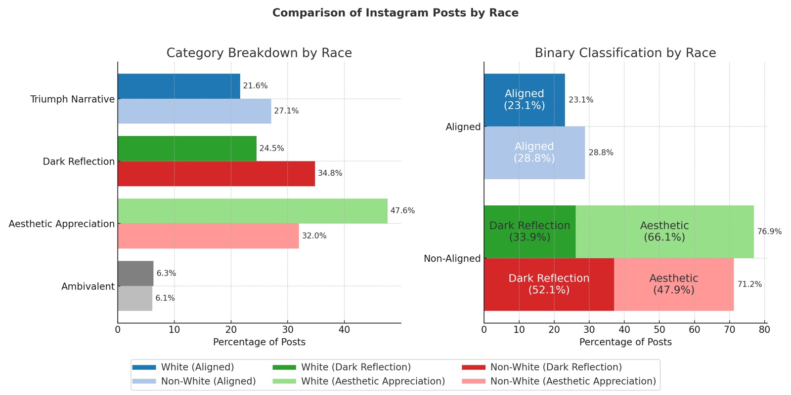
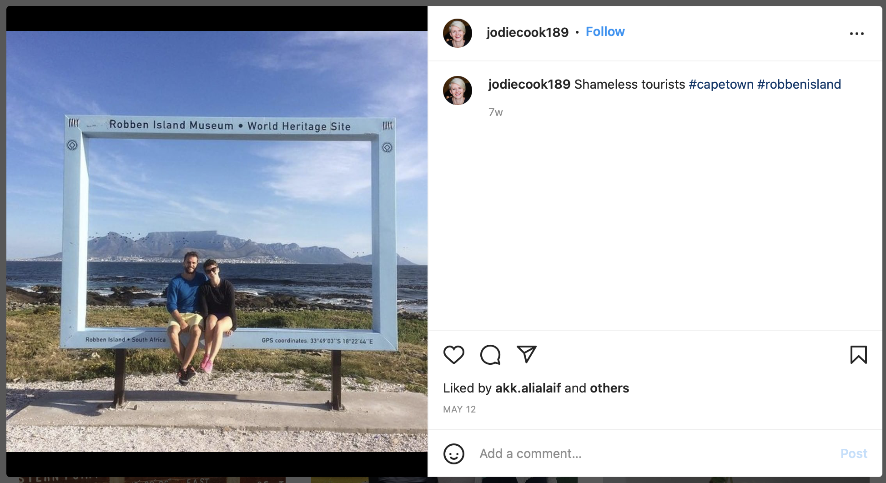
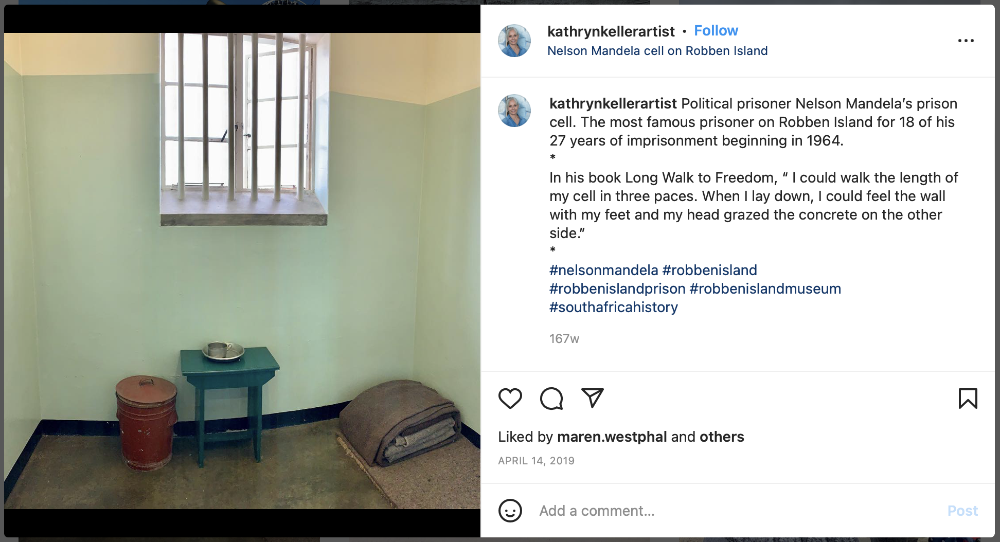
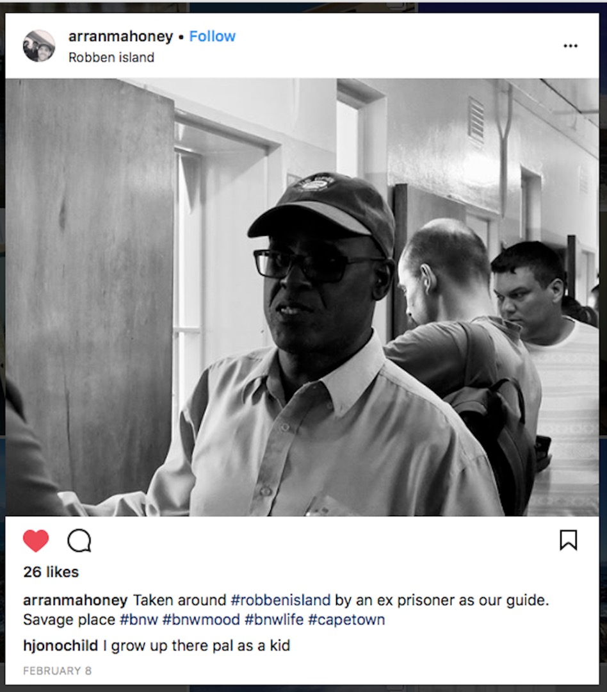
Revise & Resubmit
Meaning-in-Action: A Critical Realist Theory of Symbolic Causality in Social Behaviour
Minor revision resubmitted to Journal for the Theory of Social Behaviour
Abstract
Theories of social behaviour often acknowledge that action is meaningfully organized, but they remain less precise about how meanings become causally efficacious in practice. This article develops a critical realist account of meaning-in-action. I argue that meanings are emergent symbolic formations with conditional causal powers: they are socially produced and interpretively mediated, but once sedimented in institutions, material infrastructures, technologies, embodied dispositions, classifications, and relations of power, they can shape perception, evaluation, communication, and action before, beyond, or without conscious recognition. I specify this process through a five-part mechanism: availability or imposition, activation, orientation, articulation, and outcome. The argument extends interpretive sociology by linking the reconstruction of meaning to an account of causal operation in open social systems, building from work on cultural repertoires, dual-process cognition, pragmatist mechanisms, and context-specific causal narratives. I illustrate the framework through Robben Island Museum, a highly curated South African UNESCO World Heritage Site whose official reconciliation narrative fragments as visitors transform embodied encounters into digital cultural objects. The article contributes a portable account of symbolic causality in social behaviour, explaining how symbolic formations become effective without reducing action either to subjective interpretation, cognitive processing, or deterministic structure.
Keywords: critical realism; cultural sociology; social behaviour; meaning; Robben Island Museum; digital memory
Under Review
Actionable Pasts: Collective Memory and Social Action During South Africa’s July 2021 Unrest
Under review at Cultural Sociology
Technology and the Common Good Research Grant, College of Arts and Letters
Kellogg Institute Graduate Research Grant
Abstract
How do remembered pasts guide action before actors know what kind of event they are living through? This article develops the concept of actionable pasts to explain how collective memory becomes practically consequential during rupture. I argue that remembered histories become actionable when they are translated into three fused judgments: what is happening, who matters, and what must be done. I call this process contingent memory activation: the situated process through which memory templates, communicative infrastructures, narrative interventions, and material and digital prompts make some pasts feel relevant, binding, and testable. Drawing on interviews, digital archives, visual materials, and public testimony from the July 2021 unrest in Durban, South Africa, I trace three directions through which remembered injury became action-guiding: sacred wounds, sacred obligations, and fortified containment. The article shifts collective memory theory from retrospective narration to crisis-time orientation and shows that remembered suffering has no intrinsic political direction. It can authorize enclosure and suspicion, widen obligations of care and restraint, or produce bounded protection without civic repair.
Keywords: collective memory; cultural sociology; social action; rupture; cultural trauma; South Africa; digital media; violence
Unequal Theoretical Jurisdiction: Ubuntu and Relationally Generated Agency
Under review at The British Journal of Sociology
Abstract
Recent sociology has recovered anticolonial, Black, and Southern thought as social theory. Yet recognition does not determine the explanatory scope granted to recovered concepts. This article distinguishes canonical recovery, epistemic incorporation, and ontological reconstruction, and introduces unequal theoretical jurisdiction as a field-level hypothesis: attributed provenance may restrict a concept’s eligibility for wider theoretical work before its explanatory adequacy is examined. Anna Julia Cooper and W. E. B. Du Bois provide bounded illustrations of different reception pathways. The Southern African philosophy of Ubuntu then supplies a constructive test. Reconstructed as a contested account of relational personhood and placed in dialogue with African projects of sociological concept formation, critical realism, and relational theories of agency, Ubuntu directs attention to the social biographies of person-level powers. I develop relationally generated agency as a capacity-specific framework for tracing how relations form, sustain, activate, orient, impair, and restore powers to act. Disciplinary inclusion becomes theoretical transformation when recovered concepts are permitted to revise sociology’s general accounts of persons, relations, and causal powers and to succeed or fail through explicit theoretical comparison and empirical inquiry.
Keywords: theoretical jurisdiction; Ubuntu; agency; relational sociology; anticolonial thought; ontology
Civil Liminality: Rupture, Reconstruction, and the Boundaries of Repair in the Civil Sphere
Under review at American Journal of Cultural Sociology
Abstract
Civil Sphere Theory explains civil repair as the restoration or expansion of universalistic solidarity after social rupture. Yet not all post-crisis efforts to restore order constitute civil repair. This article develops the concept of civil liminality to theorize the unstable interval between rupture and repair, when ordinary authority, classification, and obligation are suspended and actors must reconstruct provisional order under uncertainty. Drawing on a comparative study of community responses to the July 2021 unrest in Durban, South Africa, the article analyzes 120 interviews, WhatsApp archives, community-generated digital materials, and geocoded incident data across Durban North, Durban South, and Durban West. I show that shared rupture generated divergent modes of post-rupture reconstruction. In Durban West, actors redirected defensive coordination toward restraint, brokerage, and expanded civic belonging. In Durban South, actors stabilized order through bounded protection and infrastructure defense. In Durban North, actors resolved uncertainty through racialized threat coding and exclusionary protection. These trajectories reveal that civil repair is only one possible outcome of reconstruction. Civil liminality names the process through which repair becomes possible, fails to consolidate, or is displaced by bounded, suspended, or corrosive forms of order-making.
Keywords: civil liminality; civil repair; Civil Sphere Theory; crisis; South Africa; collective action
Building Barricades or Belonging: Moral-Organizational Translation in Emergent Crisis Governance
Under review at Organization Science
Academy of Management Annual Meeting (AOM) 2026.
Abstract
How does governance emerge when formal bureaucratic authority falters, and why do similar crises produce divergent local orders? We examine these questions through South Africa’s July 2021 unrest in Durban, where residents, community policing forums, neighborhood watches, businesses, churches, taxi associations, private security actors, and digital platforms improvised systems of protection, information, mobility, supply, and conflict management amid state inadequacy. These arrangements were not formal bureaucracies, nor were they merely spontaneous acts of self-defense. They were emergent, extra-bureaucratic governance systems: provisional arrangements creating rules, roles, boundaries, authority, accountability, and care without a unified institutional hierarchy. Drawing on 120 semi-structured interviews with 100 participants across two waves, supplemented by WhatsApp archives, participant materials, field observations, and geocoded unrest data, we trace how three regionalized governance networks moved from shared rupture to divergent trajectories. We develop a process account of moral-organizational translation: the temporal interaction through which Ubuntu-shaped repertoires of recognition, obligation, dignity, restraint, and repair became carried by organizational arrangements that later stabilized, narrowed, or revised moral order. We identify three pathways: building the barricade, where organization protected insiders while hardening exclusion; holding the line, where actors restrained escalation while keeping obligation territorially bounded; and building belonging, where emergency coordination became a basis for broader recognition and partial repair. By theorizing from a Global South setting where state capacity, legitimacy, and equal protection are uneven rather than assumed, we show that crisis governance depends not only on coordination but on how organizations translate moral repertoires into boundaries, authority, restraint, and repair.
Keywords: Ubuntu; emergent crisis governance; Global South; boundary work; moral repertoires; comparative case
Chapters in Edited Volumes
Customs, Frameworks, and Strategies for Social Change
In Interpreting Protest and Social Movements, edited by Guya Accornero and James M. Jasper. Bristol University Press. Forthcoming 2027.
Informal Bureaucratic Ordering: Sacred Wounds, Sacred Obligations, and Crisis Governance During South Africa’s July Unrest
Accepted for an edited volume on African governance, edited by Jaimie Bleck, Bernard Forjwuor, Lamin Keita, and Erin McDonnell.
Manuscripts in Preparation
The Work of Restraint: Rumor, Armed Defense, and the Containment of Collective Violence
Manuscript in preparation
Nuance, Transposability, and Creativity: How Perception Produces the Potential for Social Change
Manuscript in preparation
Targeting and Orienting: A Framework for Analyzing Social Change Efforts
Manuscript in preparation
Structural Integration at Elite Universities:
Symbolic Boundary Making of Pan-African Identity
In preparation for American Journal of Cultural Sociology
Extended from BA in Sociology Senior Thesis Social Networks and Structural Diversity at College: African Student Networks, Identity and Integration, advised by Prof. Grace Kao
R.F. Thompson Award for Outstanding Research in African Studies, Yale University
Ongoing Research Projects
Seeing Crisis: Perceptual Apertures and the Making of Violence, Restraint, and Repair
Book project based on my doctoral dissertation
Harry Frank Guggenheim Emerging Scholar Award ($25,000)
Why do communities confronting the same crisis come to perceive different events—and why do those differences move some communities toward violence while others sustain restraint, cooperation, and repair?
Seeing Crisis examines this question through a comparative study of South Africa’s July 2021 unrest, when the collapse of public security across KwaZulu-Natal produced looting, infrastructure destruction, food shortages, armed community mobilization, and more than 350 deaths. Across metropolitan Durban, communities confronted many of the same conditions—state failure, scarcity, uncertainty, racial tension, and rapidly circulating rumors—but their responses diverged dramatically. In some places, collective defense hardened into racialized vigilantism and lethal violence. Elsewhere, residents developed bounded systems of protection or actively worked to prevent escalation and sustain interracial cooperation.
The book develops Perceptual Aperture Dynamics, a theory of how crises reorganize what actors can perceive. I use the idea of perceptual apertures to describe how interaction, collective memory, emotion, communication, and organizations shape what people notice, what they treat as credible evidence, whom they recognize as threatening or trustworthy, and whose welfare enters into decisions about how to act. As crises unfold, these apertures can narrow around an increasingly certain interpretation of danger or remain open to alternative information and competing moral claims. Actions then generate new evidence—barricades, confrontations, acts of care, rumors, images, injuries—that feeds back into what actors subsequently believe they are seeing.
Organizations are central to this process. Neighborhood watches, community policing forums, security groups, taxi associations, religious organizations, businesses, and informal crisis networks did not simply respond to perceptions that already existed. They actively shaped them. In some communities, leaders verified threatening rumors through relationships across racial lines, challenged racialized interpretations, redesigned checkpoints, negotiated safe movement, and restrained armed residents before confrontation could escalate. Elsewhere, organizations amplified accounts of racial danger and failed to constrain armed insiders, allowing defensive mobilization to develop into exclusion, profiling, and vigilantism.
The project draws on 120 in-depth interviews with 100 participants across two waves of fieldwork, supplemented by contemporaneous WhatsApp archives, more than 800 participant-generated images and videos, and geocoded data on more than 400 incidents, alongside field observations, public testimony, and official records. The longitudinal design allows me to move beyond the immediate crisis to examine what happened to these emergency organizations afterward: whether they disappeared, hardened into security structures, or generated more durable capacities for cooperation and civil repair.
The comparison identifies three broad trajectories of crisis response: racialized escalation, fortified containment, and active restraint and repair. One of the book’s central arguments is that nonviolence during crisis cannot be understood simply as the absence of escalation. Restraint is itself a form of collective work. It depends on actors who slow rumors, challenge threatening classifications, widen circles of obligation, broker relationships across group boundaries, and intervene before fear becomes self-confirming.
The book therefore offers a broader account of culture, organizations, and collective action under uncertainty. Community resilience depends not only on the resources, networks, or cohesion that communities possess before disruption. It also depends on what people become able to see as a crisis unfolds, how remembered histories give those perceptions moral and historical significance, and how organizations translate interpretation into coercion, care, exclusion, restraint, and governance.
The project has generated several articles, including Actionable Pasts: Collective Memory and Social Action During South Africa’s July 2021 Unrest, under review at Cultural Sociology, and Building Barricades or Belonging: Moral-Organizational Translation in Emergent Crisis Governance, under review at Organization Science. A further article, The Work of Restraint: Rumor, Armed Defense, and the Containment of Collective Violence, develops the book’s account of how actors actively interrupt pathways toward collective violence.
The next phase of the project returns to these communities during renewed xenophobic mobilization to ask whether organizations created during the 2021 crisis produced durable capacities for restraint and repair—or whether the perceptual and organizational arrangements that prevented violence in one crisis can disappear when the object of threat changes.
When Is Catastrophic Harm Publicly Recognized? Immigration Enforcement and (Non)Eventfulness in Minneapolis–St. Paul and Chicago
Co-Principal Investigator with Muna Adem, University of Notre Dame | 2026–Present
A comparative qualitative and digital study of how residents, organizations, faith communities, businesses, activists, and public institutions interpret and respond to immigration enforcement—and how state-produced harm becomes recognized as a shared public crisis or normalized as part of everyday life.
The project combines in-depth interviews with digital and visual analysis across Minneapolis–St. Paul and Chicago. We have completed more than 60 interviews to date and are building archives of Instagram and X/Twitter content alongside field materials. I lead qualitative fieldwork and analysis and supervise undergraduate researchers in data collection, interview preparation, digital coding, and archival research.
Media & Public Scholarship
Rupture, Repair, and the Civil Sphere: Moral Solidarity and Dynamics of Perception in Post-Apartheid South Africa
Invited academic video for university teaching and library use
SAGE Video Sociology Collection (2026)
Other Works
Project Manager – Why Religion Went Obsolete (OUP)
with Prof. Christian Smith | 2022–2024
I was the project manager that led qualitative research operations for Why Religion Went Obsolete: The Demise of Traditional Faith in America (Oxford University Press), overseeing data collection and analysis. I managed and mentored a team of six undergraduate researchers as we conducted and coded over 220 in-depth interviews on religious disaffiliation. Our project was based in Rome during Spring 2023, where we hosted the conference Has Western Christianity Become Obsolete? Shifts in Deep Culture and Young Adult Indifference at the Notre Dame Rome Global Gateway, presenting our research to leading European scholars and members of the Vatican Curia. In addition, I helped manage training protocols in qualitative methods, directed the thematic coding process, ensured analytical rigor, and compiled curated quotations and appendices for the first book based on this research. This foundational work also supports Occulture: The New Face of American Spirituality, which I am co-authoring with Christian Smith and Bridget Ritz. Our six outstanding undergraduate mentees have gone on to start promising careers in academia, family counseling, religious education, startup consulting, and university administration.
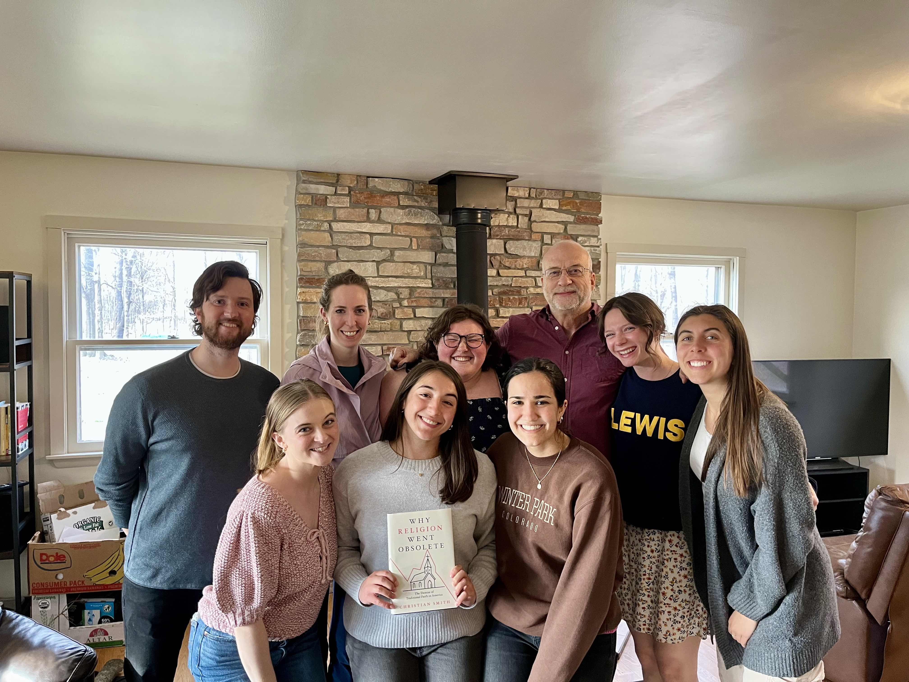
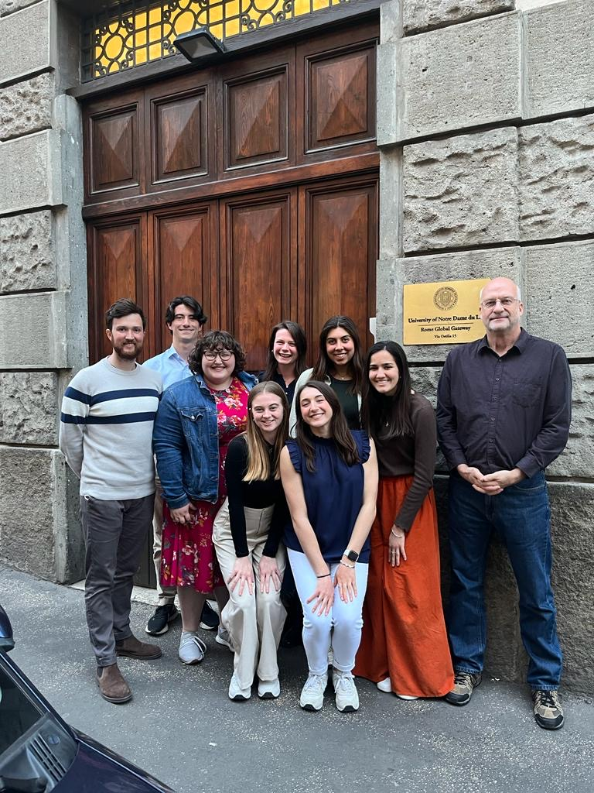
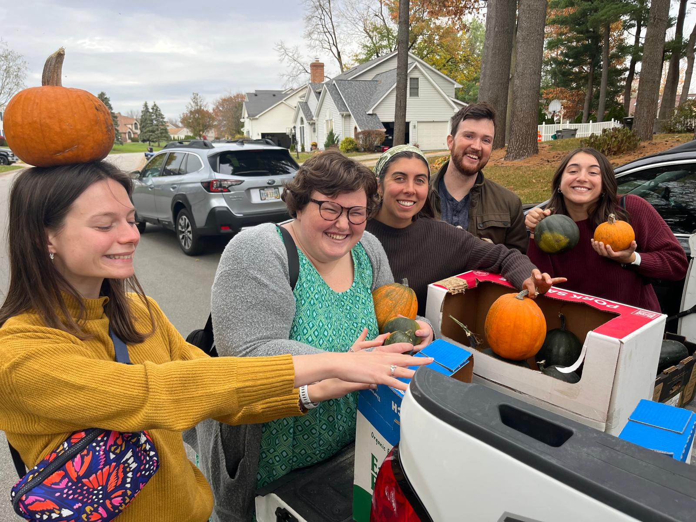
Yale-China Education Fellow
Yale-China Association | 2018-2020
I served as an Education Fellow and English teacher at Yali High School, founded in 1906 and one of the oldest continuous U.S.–China educational partnerships. In addition to classroom teaching, I co-directed a student production of Into the Woods and helped lead new education initiatives in Western Hunan in collaboration with local NGOs. I mentored students in English language development and guided those preparing to study in the United States—among them, a standout performer who played the Witch in our production went on to attend Stanford, while the student who played the Narrator enrolled at NYU. I completed intensive Chinese language study in Beijing as part of a summer program. This immersive experience advanced Yale-China’s mission of fostering mutual understanding through sustained cross-cultural exchange.
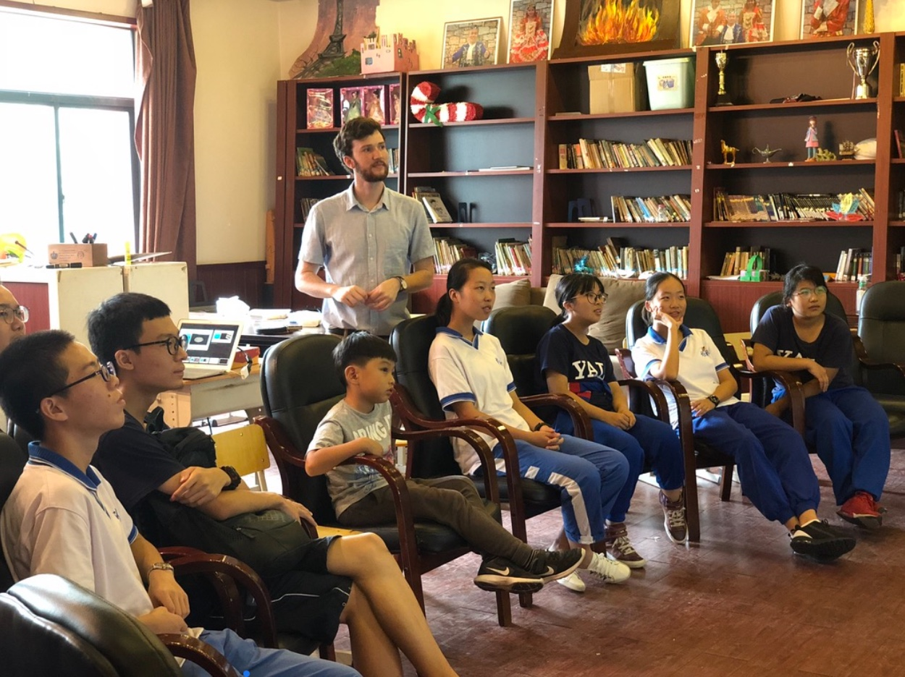
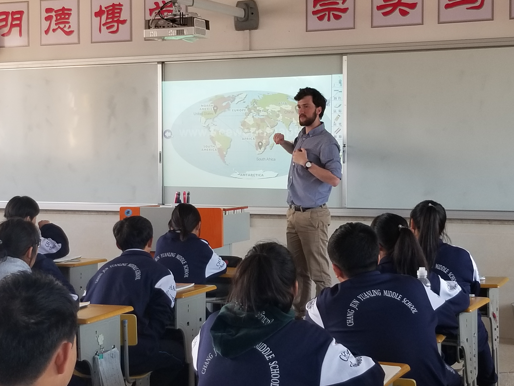


Research Fellow – Social Enterprises in Developing Economies
Rwanda | 2017
Awarded the Franciscus Fellowship for Entrepreneurship to conduct field research on food supply chains and social enterprise innovation in Rwanda. Under the mentorship of Professor Bo Hopkins, I co-authored a case study on Get It Ltd., a Kigali-based food distribution startup addressing supply chain inefficiencies through market-based solutions. I led on-the-ground research into logistical infrastructure, farmer relationships, and price volatility, and supported the company’s expansion into Musanze by developing customer relationships and mapping regional demand. The project critically examined how finance-first social enterprises can promote systemic change in developing economies, offering a grounded counter-narrative to traditional NGO and aid-based approaches to development.
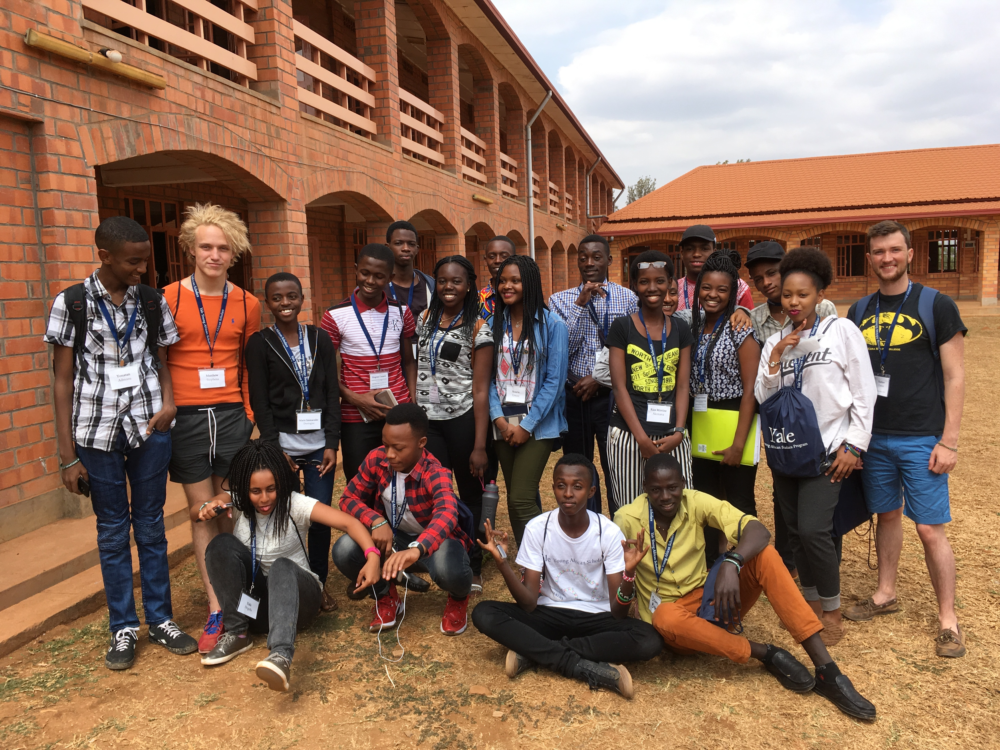
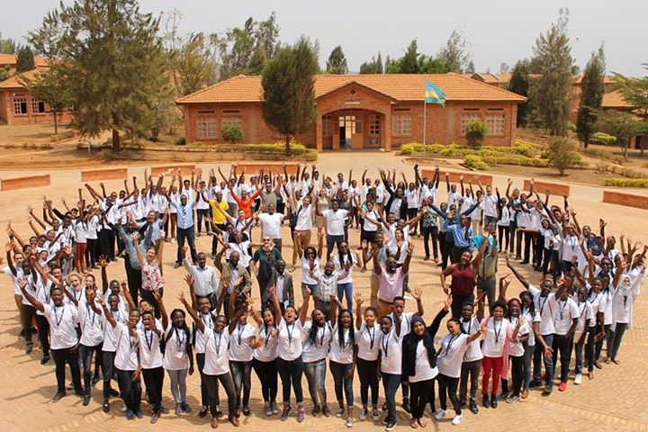
Service and Community Engagement
South Africa, Rwanda, Zimbabwe, USA
My service work spans educational mentorship, interfaith dialogue, community uplift, and institutional advocacy—across South Africa, Rwanda, Zimbabwe, and the United States. At the University of Notre Dame, I currently coordinate the Ethnography Workshop and volunteer at St. Augustine’s Church Soup Kitchen. I have also contributed to faculty hiring as a graduate student member of an Open Search Committee. In South Africa, I worked with the Hillcrest AIDS Centre Trust to design an educational impact survey for over 8,000 rural youth—research that helped consolidate international donor funding. As a Yale Young African Scholars (YYAS) Associate Fellow in Kigali and Harare, I taught seminars on social enterprise, religion and politics, SAT prep, and college essays to over 300 high-achieving, low-income students from across the continent, while offering year-long mentorship during the application process.
During my undergraduate years at Yale, I served as a Chaplaincy Fellow, organizing campus-wide events on purposeful living and religious diversity, and participated in a service-learning trip to Washington, D.C., where I volunteered with the World Food Bank and engaged with local religious communities. I held leadership roles in the Yale African Students’ Association—directing Africa Week in 2015 and 2016, coordinating guest speakers, and leading cross-diasporic dialogue events on race, education, and identity. As an Inclusion Council member of the Yale International Students’ Organization, I co-authored a report on international student well-being, resulting in expanded access to financial aid and mental health resources.
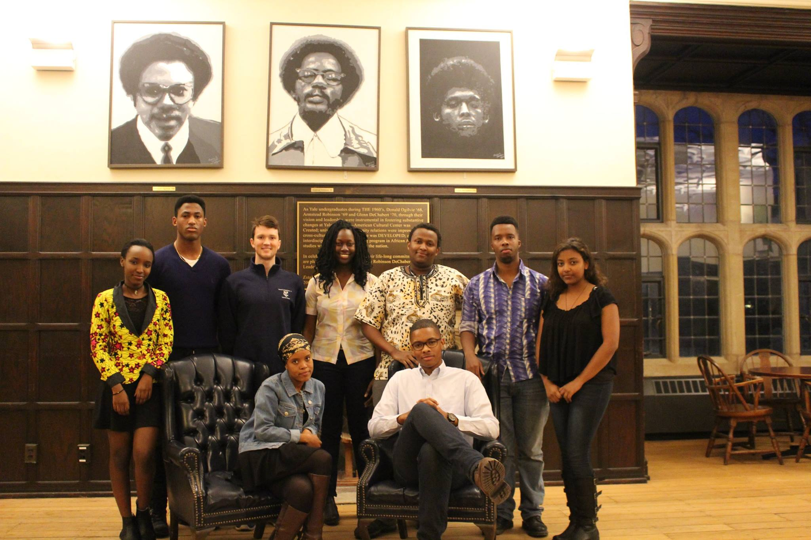
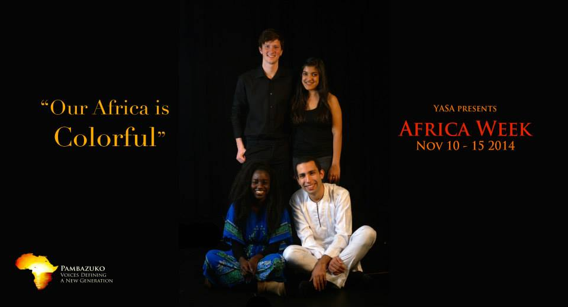
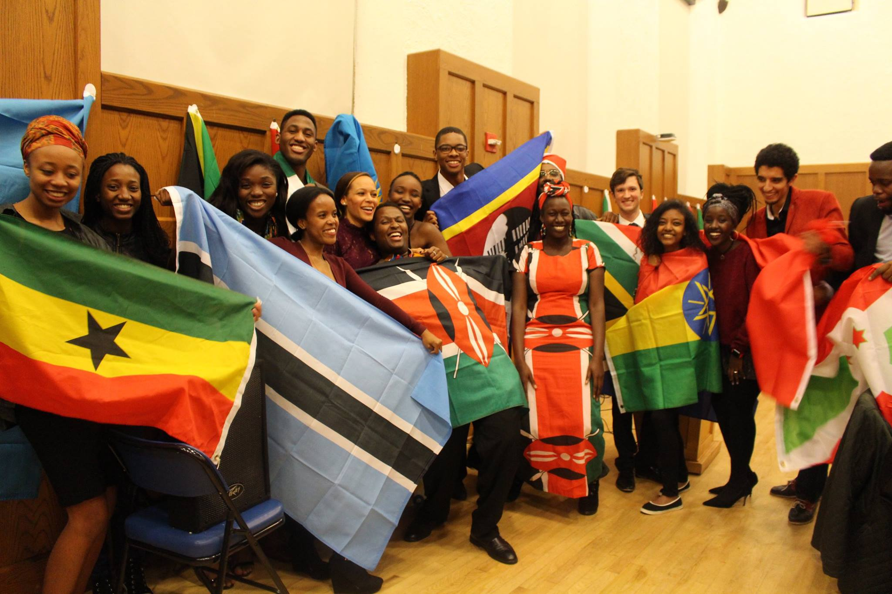
Notre Dame
-
Proposed course Becoming a Social Theorist: Where Micro Meets Macro in the Landscapes of Dune
Graduate levelSociological theory has many uses: it describes, explains, and predicts social phenomena; illuminates and debates meanings; orients and empowers action; and resists and challenges existing social configurations. Yet what we think theory is—and how we use it—depends on where we stand. Our theoretical orientations are shaped by biography, history, and situation, as well as by our position in intellectual and institutional fields. This class treats social theory as an ongoing, contested field, where competing perspectives shape how we understand the social world. Emphasis is placed on understanding the position of prominent social theorists and how they engage with different approaches to conceptualizing the social.
This course examines the long-standing divide between micro and macro sociology, emphasizing how scholars have attempted to synthesize these levels of analysis. Drawing on Denis Villeneuve’s Dune (2021, 2024) movies as a theoretical touchstone1, we explore how sociological concepts operate in both real and imagined societies. The rich and intricate social landscape of the Dune universe serves as an accessible yet analytically rich heuristic that allows us to interrogate core sociological concerns—power, agency, resistance, meaning-making, social networks, cognition, and institutions.
SyllabusSOC 34090 Foundations of Sociological Theory (Assistant Instructor)
This course introduces students to the foundational texts, philosophical debates, and intellectual traditions that have shaped the field of sociology. With a focus on major theorists such as Tocqueville, Marx, Weber, and Durkheim, students will engage deeply with primary texts to understand how sociological theory emerges in response to enduring questions about power, culture, agency, structure, and social order. Learning goals include developing a critical understanding of the philosophical underpinnings of social science, analyzing the central conceptual problems in classical and contemporary theorizing, and tracing the evolution of key theoretical schools. Students will cultivate their ability to interpret complex theoretical arguments, connect theory to empirical inquiry, and evaluate the relevance of classical theory to contemporary social issues. This course fulfills the Sociological Theory requirement for Sociology majors and minors.
PS 30600 Kinship on the Margins: Encountering Poverty and the Catholic Social Tradition (Assistant Instructor)
This interdisciplinary course integrates summer immersion with fall semester coursework to explore the moral, structural, and personal dimensions of poverty. Open only to students participating in the Summer Service Learning Program (SSLP), the course provides academic framing and reflection before, during, and after students' direct engagement with communities experiencing poverty. Learning goals include developing tools for critical social analysis, understanding the historical and systemic roots of inequality, and cultivating moral reasoning grounded in the Catholic social tradition. Students will engage key themes such as human dignity, solidarity, the common good, and the preferential option for the poor, drawing on scripture, Catholic social teaching (including Laudato Si’ and Solicitudo Rei Socialis), and contemporary theological and social thought. Through weekly readings, writing assignments, and interdisciplinary lectures, students will be challenged to articulate and defend responses to injustice rooted in a Catholic moral framework. Fulfilling the Catholicism and the Disciplines requirement, the course ultimately aims to foster “a disciplined sensibility to the poverty, injustice, and oppression that burden the lives of so many,” in keeping with the University’s mission.
Theology 33938 Confronting Social Issues: International (Assistant Instructor)
This course combines classroom learning with an 8–10 week international immersion through the Center for Social Concerns’ International Summer Service Learning Program (ISSLP). Designed for students with prior domestic service-learning experience, the course invites deeper engagement with global realities by working alongside grassroots organizations addressing the needs of their communities. Learning goals include understanding the complex dimensions of global poverty, applying tools of social analysis to identify root causes, and examining how social institutions relate to broader political, economic, and demographic contexts in the host country. Students will engage Catholic Social Teaching, particularly the principles of Solidarity and the Preferential Option for the Poor, as frameworks for ethical reflection. The course fosters cross-cultural competencies, global citizenship, and critical awareness of structural injustice. Academic requirements include a reflective journal, assigned readings and written work during the summer, six re-entry sessions in the fall, and a final paper or project.
SOC 40966 & SOC 44966 Research on American Cultural Change and Secularization I & II with Qualitative Coding Lab (Assistant Instructor)
This course is anchored in a collaborative, grant-funded research project exploring cultural transformation in the United States since the 1990s, with particular attention to shifting religious outlooks among Gen X and Millennials. Students will engage in hands-on empirical research investigating the causes and contours of religious change, including declining institutional affiliation, emergent spiritual identities, and broader cultural dynamics shaping belief and belonging. Learning goals include developing skills in sociological research methods, gaining familiarity with key theories of culture and cultural change, and analyzing the evolving landscape of American religion through the lens of the sociology of religion. Students will contribute to ongoing fieldwork, data analysis, and scholarly dissemination while cultivating critical thinking about the intersection of culture, identity, and secularization. Admission by instructor permission only.
SOC 43966 US Change & Secularization III (Assistant Instructor)
This advanced research workshop is the final phase of a multi-year, grant-funded sociological study on cultural change and secularization in the United States. Building on prior fieldwork conducted through the Pizzo Rome Scholars Program, students will complete data analysis and interpretation related to young adult religious change, institutional disengagement, and emerging spiritual orientations. The course emphasizes collaborative scholarship, with students contributing directly to the preparation of professional publications and presentations. Learning goals include deepening methodological expertise, refining analytical writing skills, and engaging critically with sociological theories of religion and culture. Students will read and discuss publication drafts, offering peer feedback and insight as part of a capstone research experience. Enrollment by permission of the instructor.
SOC 20342 Marriage and the Family (Teaching Assistant)
This course explores the family as a foundational social institution, central to early socialization, caregiving, and the transmission of values and worldviews. Students will examine the diversity of family forms across historical periods, cultural contexts, and social groups, gaining insight into how family life is shaped by—and shapes—broader social structures. Learning goals include understanding key sociological theories of the family, analyzing national patterns and trends in U.S. family life, and critically engaging with ongoing public debates about marriage, parenting, gender roles, and social change. Through empirical research, case studies, and comparative analysis, students will gain the conceptual and analytical tools to assess how family experiences intersect with class, race, gender, and religion. The course equips students to think sociologically about the challenges and transformations facing families in contemporary society.
University of Notre Dame Notre Dame, IN
PhD Candidate in Sociology
7/2021 - Present
Franco Family Institute for Liberal Arts and the Public Good (2026 - present)
Harry Frank Guggenheim Emerging Scholar (2025 - 2026)
Wilsey Distinguished Graduate Fellow at the Institute for Ethics and the Common Good (2025 - 2026)
College of Arts and Letters: Technology and the Common Good Research Grant (2024)
Kellogg Institute Graduate Research Grant (2022)
Kellogg Institute Fellow for the Study of Democracy and Development (2021 - present)
Sorin Fellow, de Nicola Center for Ethics and Culture (2018 - present)
NTK Academic Group Hong Kong
Instructor of English and Humanities
2020 - 2021
SOAS University of London London, UK
MS in Public Policy and Management
2019 - 2020
Yale-China Association Changsha, China
Yale-China Fellow
2018 - 2020
Yale University New Haven, CT
BA in Sociology (Intensive) and African Studies
9/2014 - 5/2018
R.F. Thompson Award for Outstanding Research in African Studies (2018)
Rhodes Scholarship Finalist – Southern Africa (2018)
Yale Chaplaincy Fellow (2016)
Yale African Students Association Board Member (2015, 2016)
Swimmer (Competed for Yale as a four-year varsity athlete)